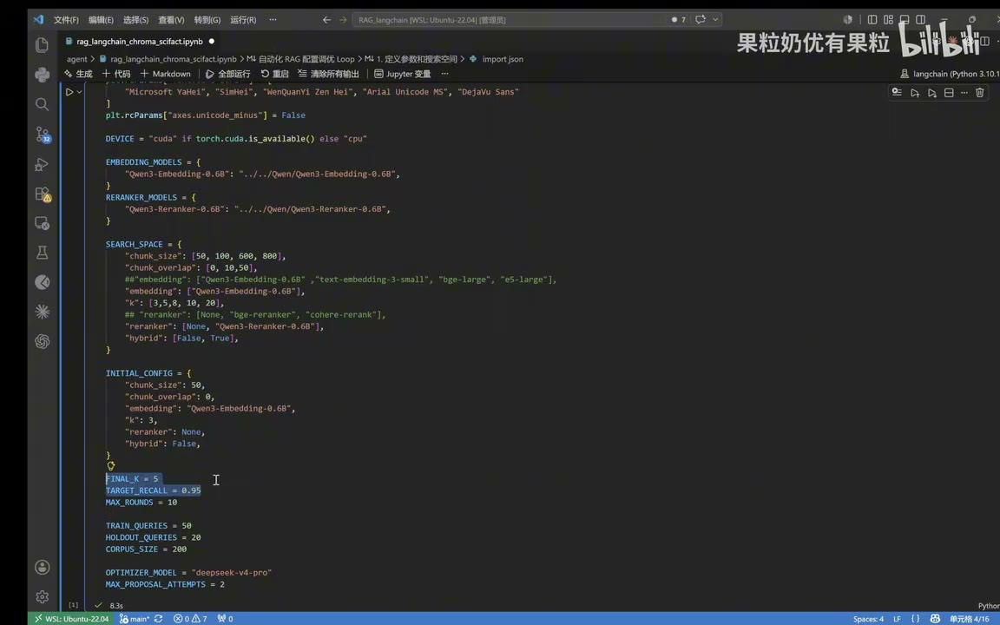

原视频 · 在线回看
点击后联网加载 B 站播放器；本地不下载整段视频。

原视频 · 在线回看
点击后联网加载 B 站播放器；本地不下载整段视频。
来源：果粒奶优有果粒｜Loop RAG：让你的 RAG 也 loop 起来，打造自进化的 RAG 系统 · 15 分 17 秒 · 深度阅读
假如我们收集了一批论文，想让 AI 帮忙回答与这些论文有关的问题。我们当然希望它使用论文里的材料，可一有问题就把所有论文全文交过去，通常很费事，也没有必要。更常见的安排是先在论文库里查找，找到可能包含答案的内容，再交给模型组织回答。这个过程叫检索增强生成，英文缩写是 RAG。
但“先找资料”这一步也会出错。库里明明有需要的论文，系统却可能没找到；即使找到几段有关的文字，也可能把更关键的内容排在后面。这时我们就想改进查找方式。把论文切得长一点还是短一点，每次多找几段还是少找几段，要不要在初次查找后再仔细排序，都会影响结果。Loop RAG 讨论的事情，就是把“试一套设置、检查效果、再试另一套”连续做起来，让模型参与提出下一轮要尝试的设置。
论文很长，系统通常先把全文分成较短的片段。一篇论文可能分出几十段，每段都保留它来自哪篇论文的信息。这样，后面即使只找回其中一段，也能知道这段属于哪篇论文。每段多长，叫切分大小，代码中常写成 chunk_size；chunk 在这里就是文本片段。把论文分段，是后面查找和调参的起点。
切好以后，一种常见做法是用 embedding 模型，把每个片段转换成一组数字。这组数字叫向量，用来表达文字的某些语义特征。用户提出问题时，也把问题转换成相应的向量，再比较它与哪些片段比较接近。系统依据比较结果，先取回若干个片段。你可以暂时把这一步理解为：让问题和资料进入一种能计算接近程度的表示方式，再据此寻找相关内容。向量接近能够提供线索，却还不保证这段文字一定含有所需答案。
取回片段后，还可以增加一次重排，英文是 rerank。重排模型同时看问题和候选内容，再判断哪些候选更适合排到前面。初次检索负责从大量资料中缩小范围，重排则在已经取得的范围里进一步挑选。等需要的内容选好，后续才可以交给生成模型组织回答。今天这个实验主要检查前面的资料检索是否做得更好，因此后面看到的分数，都要先放回“找论文”这件事来理解。
先看论文怎样分段。如果切得很短，一个观点的条件可能留在前一段，结论却落在后一段。查找时只取到其中一段，就容易缺少理解所需的信息。一种处理办法，是让相邻片段重复保留一部分内容，叫重叠，英文是 overlap，代码中写成 chunk_overlap。这样，靠近切分位置的文字能同时出现在前后两个片段中。片段长度和重叠量，改变的都是系统最初准备了哪些材料。
再看每次取回多少内容。假如按接近程度排好后，先取前三个候选片段，这里的数量就是 3。常见写法是 top k，在这次代码里对应参数 k。把它从 3 改到 8，系统就有机会把原先排在第四到第八位的片段也纳入后续处理。不过，取回的内容更多，后续要阅读和处理的材料也更多。若这些材料最终还要送给生成模型，就需要考虑模型这一次能容纳多长的输入，以及材料里是否混入太多无关内容。
模型和检索方法也可以更换。有的 embedding 模型对某种语言或领域更适合，有的重排模型对手头问题表现更好，我们可以把可用选项事先列出来。除了比较向量，还可以按问题与文档的词语匹配情况查找，BM25 就是一种常用的词语匹配排序方法。把词语检索与向量检索结合使用，叫混合检索。它使两种查找方式都能提供候选，随后再把结果合并。
这些可选项合在一起，就是搜索空间，也可以直白地理解成“这次允许尝试的设置清单”。程序里只有已经准备好的模型和功能，下一轮才有办法真正运行。因此我们先规定片段大小、重叠量、可用模型、候选数量等允许取什么值，再让负责提建议的模型从中选择。某一轮选定的完整组合，就叫这一轮的配置。
这次实验从一组很简单的配置开始：片段大小为 50，重叠量为 0，每次取 3 个候选片段，暂时不启用重排和混合检索。这个起点提供了可比较的第一份结果。后面改了设置以后，我们就能回来看：改的是哪一步，和这份初始结果相比发生了什么变化。
只有论文库还不够。系统找回一篇论文时，我们需要有办法判断这篇论文是不是当前问题需要的资料。为此，要准备三类东西：一批论文、一组问题，以及每个问题应该对应哪些论文的记录。问题与正确论文的对应记录叫 ground truth，可以先理解成检索评测所用的参考答案。这样，程序才有依据比较“应该找到什么”和“实际上找到了什么”。
这次实验从 SciFact 科学事实数据集中组织资料，库里放了 200 篇论文，用 50 个问题反复尝试不同配置，另留 20 个问题作最后的独立测试。这里的三个数量说的是不同对象。200 篇是系统要从中查找的资料，50 个和 20 个则是拿来提问、检查查找效果的问题。代码中的 TRAIN_QUERIES 记录那 50 个问题的数量；虽然名字里有 train，这次用它们做的是比较和选择检索配置，没有重新训练语言模型。
为什么还要留下 20 个问题？因为前面每试一轮，都会看到那 50 个问题的结果，再依据结果决定下一轮怎样调整。试得越多，选出的配置就越可能适合这一小组题。我们想知道它遇到没有参与挑选的问题时是否仍然有效，就需要暂时把另一组题放在一边。等配置确定，再用留下的问题测试。这就是留出测试；它增加了一次独立检查，但这 20 个问题也只能代表这次小规模实验的观察范围。
本次主要看召回率，也就是 recall。它关心的是：本来应该找回的相关资料，实际上找回了多少。举一个仅用于解释计算的例子：某道问题有两篇相关论文，最终结果中找到了其中一篇，那么这道问题的召回率就是一半。即使结果列表还列着另外几篇无关论文，也不能把那些论文算进“找回的相关资料”里。
这次代码把最终结果的评估范围设为前 5 篇，写作 recall@5，目标值为 0.95。它还规定最多尝试 10 轮：达到目标可以停，到了轮数上限也要结束。若只规定“继续改善”，就没有明确的结束位置。目标分数和轮数限制，都要在开始循环前安排好。
召回率让我们知道资料找回来没有，却还没有检查模型最后怎样使用这些资料。资料可能已经找到，回答时仍被忽略或误读。所以，检索召回率提高是一项具体进展，最终回答是否准确还需要另行检查。先保留这一区别，后面看到 0.96 一类数字，就不会把它直接当成整个问答产品的准确率。
论文经过分段、生成向量和存储之后，系统得到了一套用于查找的索引。索引可以理解为提前整理好的检索数据，它让我们不必每收到一个问题都从全文整理工作重新开始。循环调参时，一个重要问题是：哪种修改会让这些已经整理好的东西失效？
想想片段大小从 50 改成另一数值时，会发生什么。原文的切分位置改变了，片段里的文字也跟着改变，旧片段的向量自然就不能直接代表新片段。修改重叠量也会产生类似变化。换一个 embedding 模型，则改变了文字被表示成向量的方式；更换论文内容，也需要重新处理相应资料。这几项变化会影响入库的数据，需要按新条件准备相应索引。
但如果论文、切分方式和 embedding 都没变，只把每次取回的数量从 3 改成 8，库里的片段依然是原来那些，向量也依然可用。启用重排，同样主要影响取得候选之后怎样排序。于是程序可以按决定索引的那些条件保存和复用索引，只有相关条件变化时再建立新的。这种复用减少的是重复准备资料的工作，并没有省去每轮必要的检索和评分。
| 这次修改什么 | 改变的是哪一部分 | 已保存的向量索引还能直接用吗 |
|---|---|---|
论文内容、chunk_size 或 chunk_overlap |
入库的文本片段 | 需要按新内容或新切分方式准备相应索引 |
| embedding 模型 | 片段怎样变成向量 | 需要用所选模型重新生成向量 |
k，例如从 3 改到 8 |
查询时取回多少候选 | 可以复用，原有片段和向量没有改变 |
| 是否启用重排 | 候选取得后怎样排序 | 可以复用，重排处理的是已经取回的候选 |
所以，模型建议“多取几段”和建议“把每段切长一点”，会带来不同的工作量。前一个修改可以继续在同一套片段里查找；后一个修改先改变了片段本身，程序得准备好新索引，再进行比较。索引标识让程序能分清这两类情况。
程序还为检索准备了较大的候选范围，方便后续根据配置取出需要的数量。可以假设，后面最多需要 100 个候选，就先让前面的查找步骤准备 200 个，再从中选取。这个假设说明的是候选范围与后续需求的关系；前面实际设置的数量菜单仍是 3、5、8、10、20。两种情况下，准备的范围都要容得下后面打算选取的数量。中间准备了多少候选，也不能直接当成最后得到的论文篇数。
索引准备好后，查询就可以按当前配置执行。只启用向量检索时，系统依据向量的接近程度找到候选。如果同时启用 BM25，还会得到一份按词语匹配情况排序的结果。现在有两份排序，需要决定怎样合在一起。它们的原始分数采用不同计算方式，直接相加并没有自然一致的含义；这套实现采用按各自名次进行融合的办法，通常称为 RRF。
按名次融合的直觉是，先看一段资料在每条检索路线中排得有多靠前，再综合这些名次。这样，某条路线找得好的内容，就有机会进入合并后的候选。如果当前配置还启用了重排模型，接下来再让重排模型比较问题和候选内容，调整顺序。混合检索给候选来源增加了一条路线，重排则继续处理已有候选。分清这两步，看到“同时开启 hybrid 和 rerank”时，就能知道究竟增加了哪些操作。
这里还有一个容易被略过的数量区别。一次检索取得 8 个片段，这 8 段可能分别来自 8 篇论文，也可能有好几段来自同一篇论文。程序会把属于同一篇论文的片段合并到论文身份上，再检查最终论文结果。因此，候选片段数和最终涉及的论文数不能直接画等号；候选阶段的分数与最终 recall@5，也要各自看清。
举一个计数示例：8 段内容里，5 段出自论文 A，3 段出自论文 B。候选确实有 8 段，但它们只涉及两篇论文。假如问题需要的是另一篇论文 C，重复取到更多 A、B 的片段，也没有增加对 C 的覆盖。这就是为什么看片段数量时，还要继续问它们来自哪些论文。等会儿的结果表同时列出候选召回和最终召回，我们需要分别查看，不能只凭其中一列就判断整个目标已经达到。
现在，运行一套配置、检索论文、计算分数这些步骤都已具备。我们可以手工挑下一套配置，也可以把允许的组合逐一试完。在这套循环里，选择工作交给大模型：告诉它我们想达到什么目标，这一轮用了什么设置，测出了什么结果，以及下一轮允许改哪些选项。如果已经尝试过多轮，还把历史配置与结果一起提供给它。
模型根据这些输入，提出下一组配置。程序检查并运行新配置，用同一组调参问题再次检索、评分，然后把新结果交回模型。如此继续，直到达到目标或用完轮数。这就是这里的 loop，意思是循环。模型负责提出建议，检索程序实际执行建议，评估程序负责计算结果；三件事接起来，下一轮才能利用上一轮的反馈。
这一点也让“自进化”的含义具体了。这个系统会利用已得到的分数继续尝试配置，人不必每一轮都亲自选参数。但论文、参考答案、可以选择的设置和停止条件，仍需提前准备。模型提出的建议值不值得采用，最终还得看程序跑出的结果，不能因为建议附带一段很有道理的解释，就直接把它算作改进。
先看第一组运行记录。初始配置每次取 3 个候选，不重排，最终 recall@5 约为 0.852，离目标 0.95 还有距离。模型建议先把候选数量增加到 8，其他设置保持不变。第二轮跑完，候选召回已经到了约 0.963，但最终 recall@5 只有约 0.944。最终目标仍未达到，程序因此继续尝试。
第三轮保留 8 个候选，并开启重排。这一次最终 recall@5 达到约 0.963，超过 0.95，循环停止。比较三轮结果，第二轮达标的是候选召回，第三轮才让最终结果也超过目标值。
| 轮次 | 与上一轮相比改了什么 | 候选召回 | 最终 recall@5 |
|---|---|---|---|
| 第一轮 | 初始配置：k=3，不重排 |
0.8519 | 0.8519 |
| 第二轮 | 把 k 改为 8 |
0.9630 | 0.9444 |
| 第三轮 | 仍为 k=8，增加重排 |
0.9630 | 0.9630 |
这三轮实验的最终指标从 0.8519 提高到了 0.9630，系统在超过目标值以后停止。汇总分数让我们看见整体效果的变化；若想知道具体哪一道问题在第二轮遗漏、第三轮找回，还要查看那道问题的候选与排序。某一批论文上的提升，也不能保证别的论文库开启重排后会达到同样的分数。
第二次运行仍从约 0.85 的起点开始，模型给出的调整却不一样。有的轮次同时增加候选数量和重叠量，后来又加入重排与混合检索，经过多次尝试，最后展示了约 0.981 的结果。第一组运行恰好比较接近逐项修改，第二组则有多项一起变化；程序没有要求模型每轮只能改一个参数。
同时改几个参数，可以帮助寻找一套效果好的组合。但如果此时追问“到底是哪一个改动贡献了多少提升”，这组结果就不容易回答了。举例说，候选变多、片段有了重叠、重排也开启，三件事一起改变后分数提高，我们只能先确认这套组合的观察结果，不能把全部提升都归到其中一项。寻找可用配置与查明单项贡献，对比较条件有不同要求。
调参结束后，还要用那 20 个留出问题检查选定的配置。调参时反复看的是同一组题，高分配置可能很适合这批题，却未必在新问题上继续领先。最后的一次留出测试得到约 0.958，达到设定目标。这项结果说明，被测试的配置在这组新问题上仍然达标；面对别的领域和不同问法时能否保持效果，还需要相应的测试。
最后还有一个实际提醒：如果我们了解资料属于哪个领域、问题通常怎样表达，以及库里有什么特殊内容，可以把这些背景写进给模型的说明，帮助它提出更有针对性的尝试。即便如此，也仍然需要真实问题与参考答案来检查。Loop 帮我们把尝试和反馈接续起来，效果能否延续到自己的资料上，还要在自己的任务中测量。
让 RAG 循环改进，需要把“提出新设置、真正运行、依据参考答案评分”接起来，并保留一组没有参加调参的问题，检查选出的设置是否仍然有效。
先把论文变成可检索的材料，理解切分、候选数量和重排各改动哪一步。再准备论文、问题与对应答案，规定允许尝试的设置和停止条件。循环运行后，同时查看候选结果与最终论文结果；选好配置，再做留出测试。
先看上面的三轮表，不必安装工具。第二轮的候选召回已经超过 0.95，为什么程序还继续运行？试着用自己的话说出正在检查的最终目标，然后指出表里对应的那一列。如果能说清这个差别，就已经避开了阅读实验结果时一个很常见的混淆。
再想两个具体修改：把 k 从 3 改到 8，以及更换 embedding 模型。哪个修改会改变库里已经存好的向量，哪个主要改变查询时取回多少内容？解释时回到“论文怎样分段、怎样变成向量、怎样被找到”的过程即可。这个补充练习用于检验理解，不要求先亲手搭起整套系统。